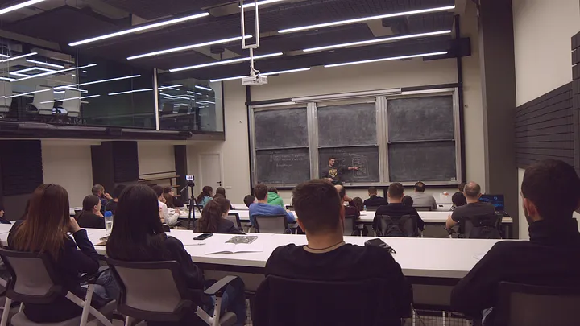
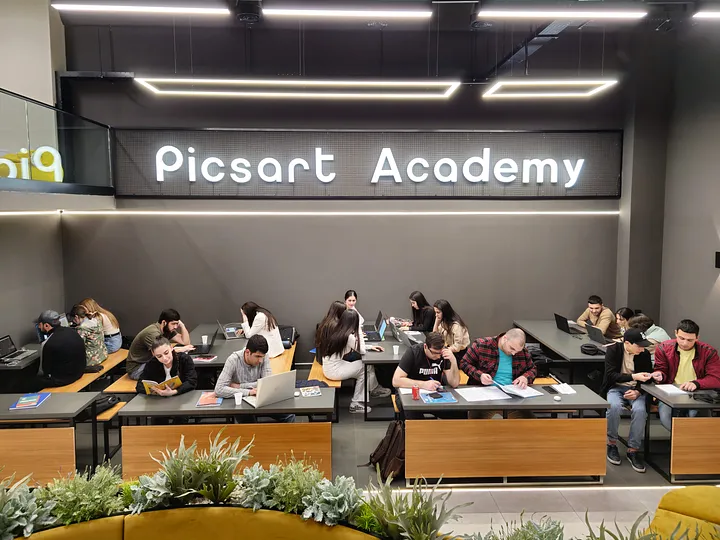
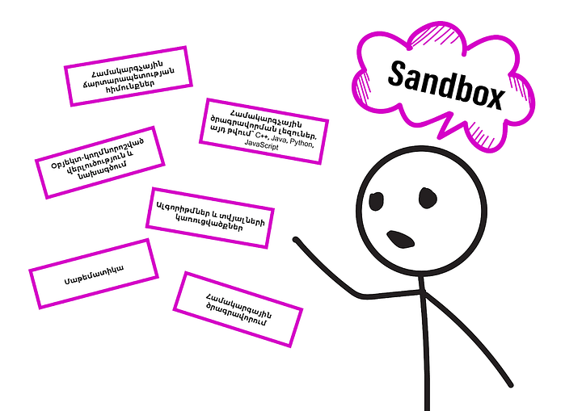
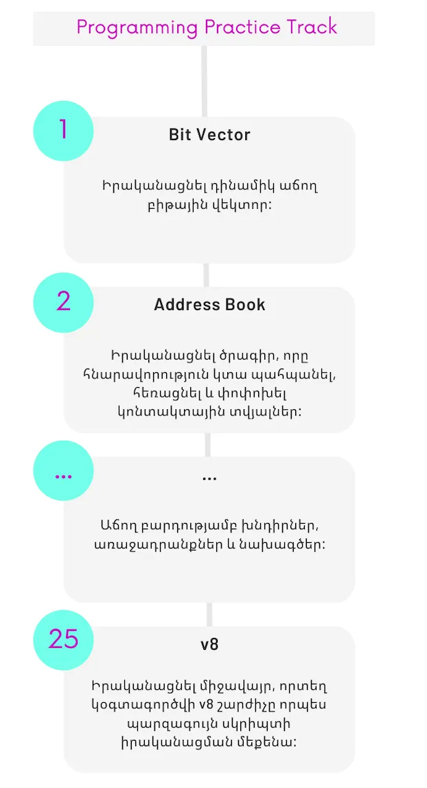

Sandbox-ի կրթական մոդելը

Wave 6-ի հայտադիմումները բաց կլինեն մինչև 2023թ. մայիսի 10 ներառյալ։ Հայտադիմումը՝ https://bit.ly/wave-6
Նորությունները բաց չթողնելու համար հետևեք մեր տելեգրամյան ալիքին. https://t.me/picsartacademy
Picsart Academy-ն համալրում է այն կրթական հաստատությունների շարքը, որոնք ստանձնում են իրական ինժեներ-ծրագրավորող կրթելու բարդագույն առաքելությունը։ Ինժեներ-ծրագրավորողին առաջին հերթին հարկավոր է հիմնովին տիրապետել հենց համակարգչային գիտությանը (Computer Science), ի վիճակի լինել խնդիրներին տալ արդյունավետ և բազմակողմանի լուծումներ, ունենալ համակարգային նախագծման և տվյալների ճարտարապետության գործնական հմտություններ:
Հենց այդ ճանապարհին էլ, մշակվել և անընդհատ զարգացման ենթարկվելով, հաստատվել է Ակադեմիայի կրթական մոդելը, մեթոդաբանությունը, անհատականացված ուսուցումը և այլն: Անկախ նրանից ուսանողը մասնագիտանում է Frontend վեբ ծրագրավորման, թե մեքենայական ուսուցման (Machine Learning) մեջ, Ակադեմիայում ստանում է հիմնարար գիտելիքներ, այդ թվում՝ ալգորիթմներ և տվյալների կառուցվածքներ, տվյալների ճարտարապետություն, համակարգային ծրագրավորում և այլն։
ինչու՞ Sandbox
Picsart Academy-ում առաջնորդվում ենք նրանով, որ ուսանողներն ունեն կոնկրետ նպատակ և ցանկանում են կիրառել ձեռք բերված գիտելիքները։ Ըստ հայտնի ուսումնասիրությունների՝ նրանք շատ ավելի արդյունավետ են սովորում սեփական փորձի հիման վրա, ինչպես նաև, երբ հենց իրենք էլ ներգրավված են լինում ուսուցման գործընթացի պլանավորման ու գնահատման մեջ, իսկ ուսուցչի հիմնական դերը նրանց ուղղորդելն է։ Շատ կարևոր է նաև, որ սովորողը հստակ պատկերացում ունենա դասընթացին մասնակցելու նպատակների և ակնկալվող արդյունքների մասին, ինչպես նաև գիտակցի, որ ինքն է պատասխանատու իր կայացրած որոշումների համար։ Իսկ դասընթացավարն իր հերթին պետք է օգնի ուսանողին գիտակցել դասընթացի անհրաժեշտությունն ու գնահատել ստացած գիտելիքները։
Picsart Academy-ի կրթական մոդելի առաջին փուլը Sandbox-ն է, որտեղ կազմակերպվում են դասընթացներ ինչպես ոլորտի սկսնակների, այնպես էլ այն փորձառուների համար, որոնք տիրապետելով մեկ ծրագրավորման լեզվի կամ տեխնոլոգիայի, չունենալով խորքային ինժեներական գիտելիքներ, ի վերջո բախվում են խնդիրների, դառնալով ավելի քիչ մրցունակ, քան այն նոր թեկնածուները, որոնք տիրապետում են նաև համակարգչային գիտությանը, ցածր մակարդակի ծրագրավորմանը, ունեն ամբողջական գիտելիքներ այնպիսի կտորներից, ինչպիսիք են՝ ալգորիթմներ, տվյալների կառուցվածքներ, ծրագրային ապահովման նախագծման մեթոդներ և այլն:
Sandbox-ը ակտիվորեն կիրառում է ադապտացիոն ուսուցման մոտեցումներ ու կրթական մոդելներ, որի արդյունքում ուսանողն ինքն է ընտրում դասընթացի տեմպն ու ինտենսիվությունը։ Բոլոր դասերը տեսաձայնագրվում են, ուստի ուսանողները կարող են դասախոսությունը կրկնել վիդեո տարբերակով, որը նաև շատ հարմար է քննաշրջանից առաջ՝ բացթողումները լրացնելու համար: Ուսանողների համար ապահովվում են բոլոր հնարավոր պայմանները, տրամադրվում են համակարգիչներ, աշխատանքային տարածք, ընթերցասրահ, ինտերնետ կապ և իհարկե միջավայր՝ քննարկումների համար։
Ընդունելություն
Sandbox-ի ընդունելության առաջին ու կարևոր փուլը cultural/behavioral հարցազրույցն է, որի ընթացքում ստուգվում է նաև դիմորդի տրամաբանությունը: Հարցազրույցը հաղթահարած դիմորդներն արդեն մասնակցում են նախընտրական թեստավորման, որի ընթացքում դիմորդը հանձնում է դպրոցական մակարդակի մաթեմատիկայի և անգլերենի թեստեր: Բոլոր փուլերը հաջողությամբ հաղթահարած դիմորդներն ընգրկվում են մեկնարկող խմբում:
Sandbox-ի կրթական ծրագիրը
Sandbox-ում կրթական ծրագիրը բաղկացած է track-երից (հիմնական դասընթացները, որոնց տևողությունը 6–12 ամիս է, ամսական վճարը՝ 55.000 ՀՀ դրամ) և module-ներից (ուղեկցող փոքր դասընթացներ, որոնք տևողությամբ ավելի կարճ են, յուրաքանչյուրը 1–2 ամիս): Այս փուլում ներառված track-երն ու module-ները հետևյալն են՝
Համակարգչային գիտություն և ծրագրավորման հիմունքներ (Computer Programming Track)
Այն իր հերթին ներառում է՝- Համակարգչային ճարտարապետության ներածություն (Computer architecture) և C լեզվի ուսուցում
- Ծրագրավորման լեզվի հիմունքներ (Programming language essentials) C++, Java, Python, JavaScript լեզուներից որևէ մեկի շեշտադրմամբ
- Օբյեկտ-կողմնորոշված վերլուծություն և նախագծում (OOAD)
- Բազային ալգորիթմներ և տվյալների կառուցվածքներ (Algorithms and Data Structure)
- Աշխատանք Linux միջավայրում
- Version Control Systems և Git
- Անգլերեն
- Համակարգչային ցանցերի բազային ներածություն
- Տվյալների բազաների համակարգերի և SQL բազային ներածություն
- Համակարգային ծրագրավորման հիմունքներ
- Վեբ տեխնոլոգիաների բազային ներածություն
- Մոբայլ հավելվածների մշակման բազային ներածություն
- Նկարների ֆորմատների և մշակման բազային ներածություն
- Վիդեո կոդավորման բազային ներածություն
- Ծրագրային ապահովման ստեղծման փուլերը
- Ծրագրային ապահովման թեստավորման հիմունքներ
- Build Automation
Մաթեմատիկայի հիմունքներ (Essential Mathematics Track)
Այն ներառում է՝- Հանրահաշիվ և երկրաչափություն
- Մաթ. Անալիզի հիմունքներ
- Գծային հանրահաշիվ
Միջանկյալ քննություններ
Յուրաքանչյուր Track-ի դասընթացի կամ մոդուլի ավարտին ուսանողներն անցնում են թեստերի, քննությունների և հարցազրույցների մի ամբողջ փուլ, ընդ որում, անցողիկ միավոր հաստատված է 100-ից 91-ը, այսինքն սխալվելու հավանականությունը ցանկալի է բացառել՝ փուլը հաղթահարելու համար: Սա ամենևին ուսանողին անելանելի իրավիճակում թողնելու համար չէ, այլ ընդհակառակը, ամեն կերպ մոտիվացնել վերջինիս լինել էլ ավելի լավը, չսահմանափակվել միայն դասախոսության ժամանակ ստացած ինֆորմացիայով, կարդալ, փնտրել և գտնել ավելին, փորձել ինքնուրույն վերլուծել և պատկերացնել որոշ տեխնիկական կտորներ:
Քննական շրջանը հաջողությամբ հաղթահարելուց հետո ուսանողը ստանում է badge, որը հանդիսանում է երաշխիք այն մասին, որ վերջինս ամբողջությամբ տիրապետում է տրված նյութին։
Յուրաքանչյուր թեստ, քննություն և հարցազրույց հնարավոր է վերահանձնել մեկ անգամ: Առաջին ձախողումից հետո ուսանողն ունենում է 5 օր ժամանակ պատրաստվելու համար: Վերահանձնման ձախողումից հետո, ուսանողը ոչ թե դուրս է մնում Ակադեմիայից, այլ միանում է հաջորդ խմբին և կրկնում դասընթացի այդ փուլը, կամ ստանում հնարավորություն առնվազն մեկ ամիս անց՝ ամբողջ քննական կտորը նորից անցնելու: Հիմնական քննաշրջանից բացի, ուսանողներն ունենում են նաև ընթացիկ ինքնաստուգիչ թեստեր, որոնց շնորհիվ հնարավոր է, մինչ քննաշրջանին մոտենալը, հասկանալ պոտենցիալ բացերն ու աշխատել դրանք շտկելու ուղղությամբ:
Գործնական աշխատանք
Սկզբնական Track-երի և մոդուլների ավարտին անմիջապես հաջորդում է Sandbox-ի ավարտական ծրագրավորման պրակտիկան, որի ընթացքում 25 շաբաթ ուսանողները ծրագրավորման 25 մեծ խնդիրներ են լուծում կամ իրականացնում նախագծեր. յուրաքանչյուր շաբաթվա սկզբում ստանում են խնդիրը, շաբաթվա ընթացքում աշխատում այդ խնդրի վրա, իսկ վերջում ստանում այդ խնդրի լուծման հնարավոր տարբերակները: Այդպիսով ուսանողների մոտ սահուն կերպով զարգանում են նաև գործնական հմտությունները, փորձում են մի խնդրի շուրջ դուրս բերել լուծման հնարավոր բոլոր տարբերակները:
Դասապրոցեսի կազմակերպման հարցում դասախոսական անձնակազմից բացի ներգրավված են նաև՝
- Teaching Assistant — դասախոսի օգնականներ, որոնք վերահսկում են ուսանողների հանձնարարությունների կատարումը, ինչպես նաև ստեղծում են թեստային հարցեր տարբեր դասընթացների համար։
- Mentor — ավագ ուսանողն է, ով օգնում է նորեկին ուղղորդելով գրականության և ուսման ընթացքում՝ զարգացնելով նորեկի մոտ ինքնուրույն աշխատանքի կարողությունները։
- Practice Assistant — պրակտիկայի օգնական, ով կազմակերպում է պրակտիկ դասեր յուրաքանչյուր տեսական դասից հետո:
- Angel —ավագ ուսանողն է, ով ուղղորդում է ամբողջ խմբին կամ ենթախմբին՝ ծանոթացնելով ակադեմիայի ներքին կյանքին և մշակույթին։
Sandbox-ի բոլոր առարկաների badge-երը հավաքելով (թվով մոտ 17 badge)՝ ուսանողն արդյունքում ստանում է Picsart Academy Certified Software Engineering Intern որակավորումն ու հաջողությամբ ավարտում է Sandbox-ը՝ շարունակելով կրթությունը Level Up Bootcamp-ում։

Տեսական և գործնական խորացված դասընթացներ, ուսուցման տարբեր մեթոդներ, ազատ աշխատանքային տարածք, աջակցող և օգնող տեխնիկական և ադմինիստրատիվ անձնակազմ՝ այն ամենն ինչ անհրաժեշտ է լավագույն արդյունքին հասնելու համար: Մենք չենք սահմանափակում ուսանողի պոտենցիալը, չենք հաստատում ավարտական ժամկետներ, չենք պարզեցնում կրթական ողջ գործընթացը, փոխարենը՝ հնարավորություն ենք տալիս ուսանողին հենց այստեղ և այս պահին սկսել իրական ինժեներ-ծրագրավորող դառնալու բարդագույն ուղին: